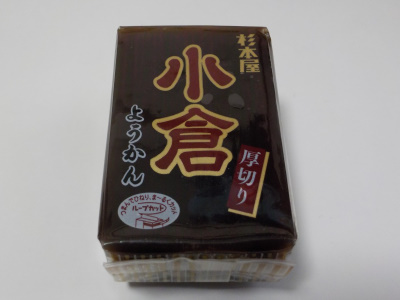

杉本屋製菓の厚切り小倉ようかん。
2023/03/12

3時のおやつに1人でむしゃむしゃ食べました。量が多いので食べれないかも?と思いましたが、美味しくいただきました。
ただ、糖分やカロリーは取り過ぎなんでしょうね。今から晩御飯までしっかり動こうと思います。
愛知県豊橋市鍵田町48番地
2023/03/12

3時のおやつに1人でむしゃむしゃ食べました。量が多いので食べれないかも?と思いましたが、美味しくいただきました。
ただ、糖分やカロリーは取り過ぎなんでしょうね。今から晩御飯までしっかり動こうと思います。